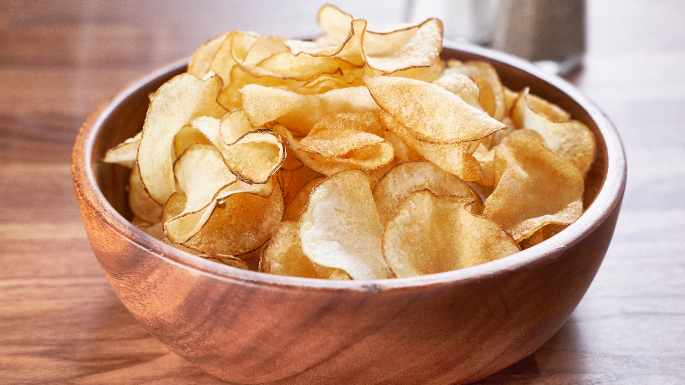

Potato Chips Recipe

Ingredients
- 1 tablespoon vegetable oil
- 1 potato, sliced paper thin (peel optional)
- ½ teaspoon salt, or to taste
Steps
- Pour the vegetable oil into a plastic bag (a produce bag works well). Add the potato slices, and shake to coat.
- Coat a large dinner plate lightly with oil or cooking spray. Arrange potato slices in a single layer on the dish.
- Cook in the microwave for 3 to 5 minutes, or until lightly browned (if not browned, they will not become crisp). Times will vary depending on the power of your microwave. Remove chips from plate, and toss with salt (or other seasonings). Let cool. Repeat process with the remaining potato slices. You will not need to keep oiling the plate.